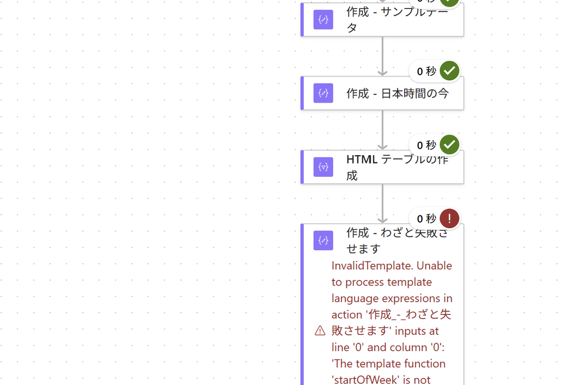
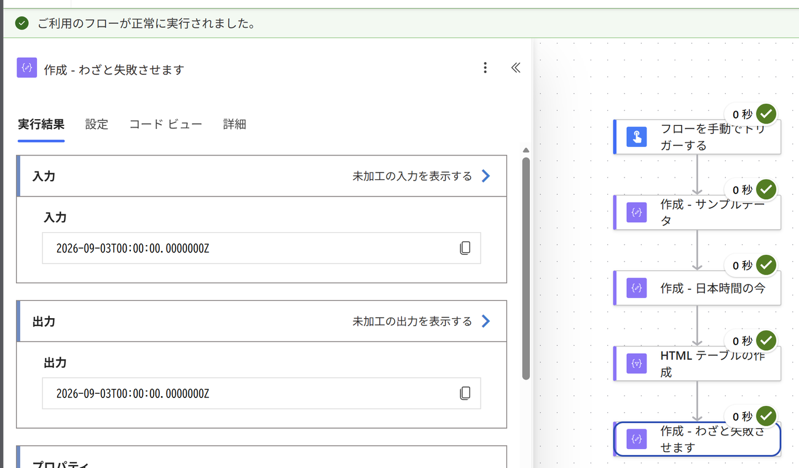

PA45 第27回｜ハンズオン手順
練習用のフローで、Copilot の頼み方を5つ試すこれから作るのは練習用のフロー です。業務で使うものではありません。Copilot への頼み方5つを、1本の中で全部試せるように わざと組んであります。作って、わざと壊して、聞いて直して、動かす。その道中で5つを体験します。
先にお伝えします。このフローに実用の目的はありません。 「これを作ると仕事が楽になる」という類のものではなく、
Copilot の頼み方を試すための土台 です。
① サンプルデータ → ② 表にする ＋ ③ 日本時間 ＋ ④ 今週の開始日 → ⑤ ひとつにまとめる
①〜④はそれぞれ別の結果を出します。最後の⑤で全部を1つの出力にまとめて、フローとしてつなげます。
今日ほしいのは、フローそのものではなく「頼み方」です。 ただ、頼み方だけ聞いても身につかないので、
実際に手を動かす場面をわざと作っています 。どのステップも「この頼み方を試すには、こういう場面が要る」という理由で置いてあります。
なぜコネクタを使わないのか。 接続の設定で人によって止まってしまいます 。今日の主題は Copilot への頼み方なので、そこで時間を使いたくありません。使うのは「作成」と「HTML テーブルの作成」だけ。全員が最後まで到達できることを優先しました。
📋 今日の進み方
手を動かすのはフロー作りだけです。 Copilot に聞く場面は、講師が画面でやってみせます。
返ってくる答えは人によって違うので、全員でやると収拾がつかなくなるためです。
同じことは
プロンプト集 を使って、あとからご自身の環境で試せます。
遅れても大丈夫です。 この手順書は残りますし、録画も公開します。
途中で手が止まったら、無理に追わずに画面を見ていてください。あとから同じ順番でやり直せます。
⏱ 時間が押したときは STEP 3（日本時間）は飛ばして構いません。 今日いちばん持ち帰ってほしいのは STEP 4 → STEP 5 、つまり壊れて、聞いて、直って、動く ところです。作成 - 今週の開始日 は前のアクションを参照していないため）。飛ばした分は、この手順書であとから追いつけます（最後の仕上げ では、日本時間の行だけ抜いてください）。
Copilot が使えない方へ。 フロー作りは最後まで同じように進められます。
Copilot に聞く場面は講師の画面をご覧ください。プロンプトは
配布ページ に置いてあります。
準備
空のフローを1つ作る
まず入れ物を用意します。なぜ手動トリガーか ＝今日は何度もテスト実行して結果を見る からです。スケジュールにすると時間が来るまで確認できません。
Power Automate（make.powerautomate.com ）を開きます。
左メニューの「＋ 作成」 をクリックします。
「インスタント クラウド フロー」 を選びます。フロー名に Copilotの頼み方5選 と入れます。
トリガーの一覧から「フローを手動でトリガーする」 を選び、「作成」 を押します。
手動トリガーにする理由。
今日は何度もテスト実行して結果を見る のが目的です。ボタンで動くフローなら、待たずに好きなだけ試せます。
STEP 1
サンプルデータを置く（作成）
なぜこれを置くのか ＝頼み方①「材料を先に見せる 」を試すには、Copilot に貼れる出力 が手元に要るからです。中身は何でもよく、今日は作業ログ風にしてあります。
「＋ 新しいステップ」 を押します。検索欄に 作成 と入れて、「作成」 （データ操作）を選びます。
アクション名を 作成 - サンプルデータ に変えます（右上の「…」→「名前の変更」）。
「入力」 に、下のJSONをそのまま貼ります。保存 → 「テスト」→「手動」→「テスト」→「フローの実行」 で動かします。実行結果で 作成 - サンプルデータ を開き、「出力」 を確認します。
👍 で、何が嬉しいのか 動的コンテンツの正体を見る 作業です。画面では「タイトル」と出ていても、中身がどんな形で入っているかは出力を見ないと分かりません。この出力をそのまま Copilot に貼ると、推測ではなく実物の名前で答えてくれます 。「言われたとおりに書いたのに動かない」の往復が、これだけで消えます。出力を見る習慣がつくと、そもそも詰まりにくくなります。
入力に貼ります コピー [
{ "タイトル": "見積書の作成", "担当者": "山田", "状況": "完了", "登録日": "2026-09-07" },
{ "タイトル": "検収データの整理", "担当者": "佐藤", "状況": "対応中", "登録日": "2026-09-08" },
{ "タイトル": "月次レポートの下書き","担当者": "田中", "状況": "未着手", "登録日": "2026-09-09" }
] ★ ワンポイント（Power Automate を触ってきた人向け） アクション名は「既定名 - 一言説明」で付ける。ただし式からは参照しない。 作成 - サンプルデータ のような名前を勧めています。一方で日本語とハイフンが入った名前を式から参照すると壊れやすい という副作用があります。繰り返しの中では items('Apply_to_each') ではなく @item() を使うと、名前を式に書かずに済んで安全です。
★ ワンポイント（Power Automate を触ってきた人向け） Copilot に渡す出力は「未加工の出力を表示する」からコピーする。 「未加工の出力を表示する」 を開くと本物のJSONが出ます。Copilot に渡すのはこちらです。整形された表示から書き写すと、項目名が実物と変わってしまう ことがあります。会社名・氏名・メールアドレス・取引先名・金額は、サンプルの値に置き換えてから 貼ってください。
STEP 2
表に整える（HTML テーブルの作成）
なぜこのアクションなのか ＝頼み方②「日本語名も頼む 」の実例に一番向いているからです。名前を知らないと検索で見つけられない アクションで、Copilot に聞くと英語名で返ってきます。まさにそこで詰まります。
「＋ 新しいステップ」 を押します。検索欄に HTML と入れて、「HTML テーブルの作成」 を選びます。
「開始」 をクリックし、動的コンテンツから 「作成 - サンプルデータ」の出力 を選びます。保存 して、もう一度テスト実行 します。表のHTMLが出力に出れば成功です。
👍 で、何が嬉しいのか 名前を知らないと探せないアクション がたくさんあります。「HTML テーブルの作成」もそのひとつで、「表」で検索しても出てきません。Copilot のいちばんの使いどころは、実はここです。 やりたいことを言えば、知らなかったアクション名を教えてくれます 。一覧を端から眺める必要がなくなります。
ここが今日の入口です。
このアクション、自力で見つけられたでしょうか。「HTML テーブルの作成」は、名前を知らないと検索できません。
Copilot に聞くと教えてくれますが、返ってくるのは Create HTML table という英語名です。
★ ワンポイント（Power Automate を触ってきた人向け） 英語名は「画面を探すため」だけに使う。式に持ち込まない。 outputs('Compose') のような英語のアクション名で書いてきます。ところが日本語環境で作ったフローのアクション名は「作成」「作成 2」です。英語名のまま式に貼っても動きません。 「アクション名は英語名（日本語名）の形で両方書いて」 と足します。それでも英語のまま返ってきたら、もう一度頼めば直ります。一発で決まらないのが普通 です。
STEP 3
日本時間を出す（作成）
なぜ式を使うのか ＝頼み方③「式だけちょうだい 」を試すには、式が要る場面 を作らないといけないからです。時刻の変換はその代表格です。※ 時間が押していたら、ここは飛ばして STEP 4 へ進んでください。
「＋ 新しいステップ」 → 作成 をもう1つ追加します。アクション名を 作成 - 日本時間の今 に変えます。
「入力」 をクリックし、式（fx） のタブに下の式を貼ります。保存 してテスト実行 。日本時間が出れば成功です。
👍 で、何が嬉しいのか 式を覚えなくてよくなります。 convertTimeZone の引数の順番を暗記している人はいません。「式だけ」と言うだけで、貼れる一行が返ります。 時刻はUTCのままだと9時間ずれます 。これは知らないと気づけないので、覚えて帰ってください。
式（fx）に貼ります コピー convertTimeZone(utcNow(),'UTC','Tokyo Standard Time','yyyy/MM/dd HH:mm') ★ ワンポイント（Power Automate を触ってきた人向け） 時刻の式が返ってきたら、まずタイムゾーンを疑う。 初期設定がUTC（世界標準時） です。utcNow() をそのまま使う式が返ってきたら、日本時間になっていません。変換が入っているか を必ず確かめてください。スケジュールのトリガーなら、設定画面のタイムゾーンで「(UTC+09:00) 大阪, 札幌, 東京」 を選びます。
★ ワンポイント（Power Automate を触ってきた人向け） 「式だけちょうだい」と頼むと、長い解説が返ってこない。 形 を先に伝えるのがコツです。
STEP 4
わざと壊す
なぜわざと壊すのか ＝頼み方④「エラー文をそのまま貼る 」を試すには、本物のエラー が要るからです。しかもここで貼る式は、Copilot が実際に返してきたもの 。作り話ではありません。今日の山場です。
「＋ 新しいステップ」 → 作成 をもう1つ追加します。アクション名を 作成 - 今週の開始日 に変えます。
「入力」 の式（fx） に、下の式を貼ります。
これは Copilot が実際に返してきた式です。 保存 します。……保存できてしまいます。 テスト実行 します。ここで初めて赤くなります。
👍 で、何が嬉しいのか 保存もフロー チェッカーも通るのに、実行で落ちる ——こういう壊れ方があると知ることが収穫です。式を入れたら、そのアクションだけ小さく試す。 これが結局いちばんの時短です。
式（fx）に貼ります コピー startOfWeek(utcNow()) 出るエラー（実機で確認済み） The template function 'startOfWeek' is not defined or not valid. startOfWeek という関数は、Power Automate には存在しません。
実在するのは startOfDay ／ startOfHour ／ startOfMonth の3つだけです。
★ ワンポイント（Power Automate を触ってきた人向け） いつ気づけるかは、間違いの種類で違う。 必須の欄が空 のときは、保存したときにフロー チェッカー が「'フォルダーのパス' は必須です。」のように教えてくれます。ここは気づけます。式の中身の間違いは、保存でもフロー チェッカーでも素通り します。実際このフローは、ソリューションのインポートも保存もチェッカーも、何も言いませんでした （実機で確認）。止まったのは実行したときだけです。式は、そのアクションだけ小さく試してから 先へ進みます。

実行するとこうなります。手前は成功し、最後だけ赤 。保存もフロー チェッカーも何も言わなかったのに、ここで初めて止まります。
STEP 5
Copilot に聞いて直す
壊れたままでは終われません。直して動かすところまでが今日のゴール です。ここで頼み方④が効きます。
赤くなったアクションをクリックして、エラー文をコピー します。
下の文の（ ）にエラー文を貼って、Copilot に送ります。英語のまま貼って構いません。
返ってきた置き換えの式 を、作成 - 今週の開始日 の入力に入れ直します。
保存 してテスト実行 。全部緑になれば完成です。
👍 で、何が嬉しいのか 英語のエラーで固まらなくなります。 訳さずそのまま貼れば、何が起きているか・どこを直せばいいかが日本語で返ってきます。ここを越えられると、一人で進めるようになります。
そのまま貼れます コピー Power Automate でフローを実行したら、次のエラーが出ました。
（エラーメッセージをそのまま貼る。訳さなくてよい）
・何が起きているのか
・どのアクションの、どの設定を直せばよいのか
この2つを、初心者にも分かる言葉で教えてください。 うまく直らないときの逃げ道。 utcNow ／ addDays ／ startOfDay の3つだけで、いずれも公式の関数リファレンスに載っています （addDays は負の数を渡せることも明記されています）。この式は実機で動くことを確認済みです （実行すると「7日前の0時」が返ります）。必ずテスト実行して自分の目で確かめてください 。「どこかで動いた」と「自分のフローで動く」は別の話です。今日の startOfWeek は、そこを飛ばしたときに何が起きるかの実例でした。
うまくいかないときはこれ コピー startOfDay(addDays(utcNow(),-7)) ★ ワンポイント（Power Automate を触ってきた人向け） 英語のまま貼ってよい理由。 アクション名・関数名・行番号 が、そのまま原因の手がかりです。訳さず貼るほうが速く着きます。
★ ワンポイント（Power Automate を触ってきた人向け） 失敗すると、デザイナーの Copilot も助けに来る。

直すとこうなります。 「ご利用のフローが正常に実行されました。」と出て、5つすべてが緑。出力に7日前の日付（この画面では 2026-09-03）が入ります。ここまで来たら完成です。
仕上げ
4つの結果を、ひとつにまとめる
なぜこれをやるのか ＝ここまでの4つは、それぞれが勝手に結果を出しているだけ で、つながっていません。最後にひとつにまとめて、フローらしい形 にします。ここでは式は書かず、動的コンテンツを選ぶだけ です。
「＋ 新しいステップ」 → 作成 をもう1つ追加します。アクション名を 作成 - 仕上げ に変えます。
「入力」 をクリックし、ラベルの文字は自分で打って 、値のところは動的コンテンツから選びます 。
集計日時： → 作成 - 日本時間の今 の出力 対象期間： → 作成 - 今週の開始日 の出力 と打って「以降」改行して → HTML テーブルの作成 の出力
保存 → テスト実行 。この1つの出力を見れば、今日つくったもの全部が入っています。
できあがりの形（イメージ）
集計日時：2026/09/10 20:40 2026-09-03T00:00:00Z 以降
👍 で、何が嬉しいのか 動的コンテンツは「前の結果を、後ろで使う」ための仕組みです。 ここまで1回しか使っていませんでした。前のアクションの出力を、次のアクションが受け取る ——これがつながるフローの正体です。まとめた結果は、そのまま次の行き先に渡せます 。メールの本文、Teams の投稿、SharePoint の列。今日はコネクタを使いませんが、この「作成 - 仕上げ」の出力を選ぶだけ で送れるようになります。
★ ワンポイント（Power Automate を触ってきた人向け） まとめ用の「作成」を1つ置くと、あとがラクになる。 先に「作成」で組み立ててから渡す ほうが確実です。理由は3つあります。テスト実行で中身を目視できる （送らずに確認できる）差し替えても、組み立て部分は作り直さなくていい 組み立てが悪いのか送信が悪いのか が切り分けられる
動的コンテンツの一覧に出てこないとき。 そのアクションがまだ一度も実行されていない ことが多いです。いったん保存してテスト実行すると出てきます。それでも出ないときは、検索欄にアクション名を打つと絞り込めます。
STEP 6
できたフローを読ませてみる
おまけです。半年後の自分や、引き継いだ人が中身を読めない ——これはよく起きます。頼み方⑤はそのときに効きます。
今日のフローの中身はこちら から見られます。
下の文の（ ）に貼って、Copilot に送ります。
👍 で、何が嬉しいのか 引き継いだフローが読めるようになります。 作った人はもういない、コメントもない、でも直さないといけない——よくある場面です。
そのまま貼れます コピー これは Power Automate のフローの中身です。
（フローのJSONを貼る）
・このフローが何をしているのか
・つまずきそうな所はどこか
この2つを、Power Automate を触ったことがない人にも分かる言葉で説明してください。 ★ ワンポイント（Power Automate を触ってきた人向け） 自分のフロー全体を渡したいときは、ソリューションから書き出す。 ソリューションを作る → そのフローを追加する → 一覧でその行を選んでエクスポート （フローを開いた画面の中には無く、一覧側 にあります）→ アンマネージド で書き出す、の順です。できたZIPを解凍すると、中の Workflows フォルダにJSONが入っています。
まとめ
貼る前に、必ずやること
今日つかった5つの頼み方に共通する、最後の関門です。
🔒 機密は置き換える。
会社名・氏名・メールアドレス・取引先名・金額は、サンプルの値にしてから貼ります。
🔍 そのまま信じない。
引用元として示されたページが、中身と関係ないことがあります。関数名は
公式の関数リファレンス で確かめられます。
⬜ 空欄を疑う。
必須の欄が空のまま返ってくることがあります。空欄は、AI が人に渡した場所 だと思ってください。
今日いちばん持ち帰ってほしいこと。 下書き役 です。確かめるのは自分 ——この順番さえ守れば、頼るほど速くなります。
PA45 第27回 ハンズオン手順 ／ Power Automate × Copilot